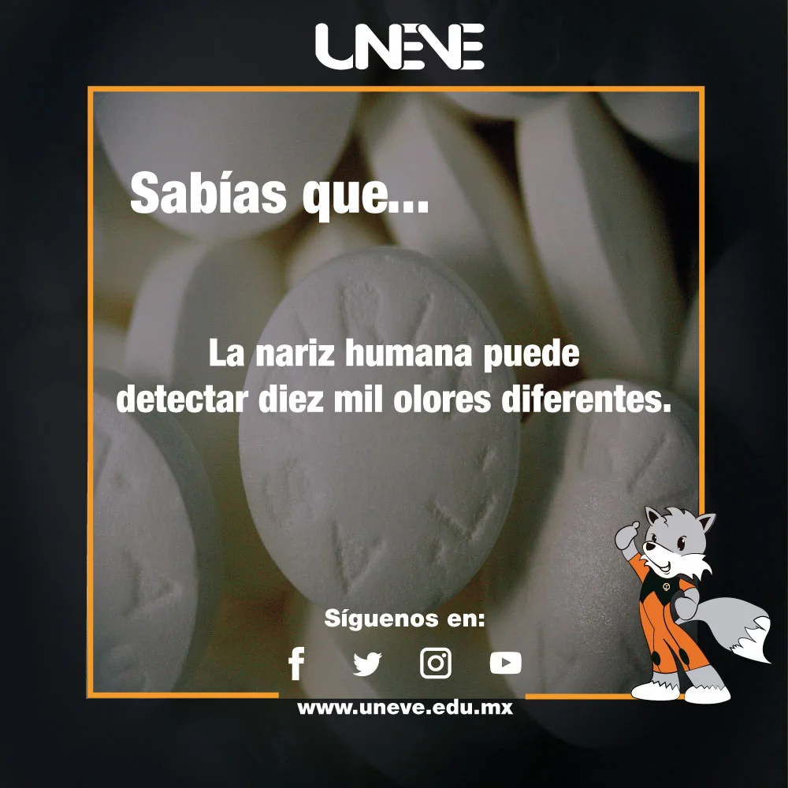

<!DOCTYPE html>
<html>
<head>
	<meta charset="UTF-8">
	<meta name="theme-color" content="#20202F">
	<meta name="viewport" content="width=device-width, initial-scale=1.0, maximum-scale=1.0, user-scalable=no">
	<script src="https://kit.fontawesome.com/8262a57d41.js" crossorigin="anonymous"></script>
	<title>Imagenes</title>
	<link rel="stylesheet" href="css/estilosgaleria.css">
	<link rel="icon" href="img/favicon.png">
	<link href="https://fonts.googleapis.com/css2?family=Carter+One&family=Secular+One&display=swap" rel="stylesheet">
	<link href="https://fonts.googleapis.com/css2?family=Pacifico&display=swap" rel="stylesheet">
	<link href="https://fonts.googleapis.com/css2?family=Luckiest+Guy&display=swap" rel="stylesheet">
	<link href='https://unpkg.com/boxicons@2.0.9/css/boxicons.min.css' rel='stylesheet'>
</head>
<body>
<!--<script src="https://cdn.jsdelivr.net/npm/sweetalert2@10"></script>
<script src="sweetalert.js"></script>-->
<script src="js/archivo.js"></script>
</body>
<h1 class="title-redes">Post redes sociales</h1>
<section class="container-grid">
	
	
	
	
	
	
	
	
	
	
	
	
	
	
	
	
	
	
	
	

	
	<div class="container-img">
		
		<i class='icono-cerrar bx bxs-x-circle'></i>

	</div>
</section>

<script src="js/index.js"></script>
</html>

